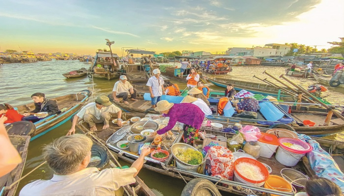
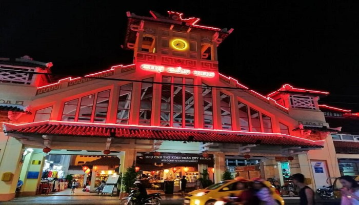

Tour du lịch Cần Thơ giá rẻ
Bạn đang lên kế hoạch cho chuyến đi giả ngoại cùng với gia đình và bạn bè?
Bạn đang tìm kiếm tour du lịch miền Tây nhưng đang phân vân nên đi đâu?
Bạn đang tìm kiếm tour du lịch với chất lượng phục vụ tốt và giá cả phải chăng?
Khi bạn đọc tới đây xin chào mừng bạn đến với dịch vụ du lịch Cần Thơ của chúng tôi
Với kinh nghiệm hoạt động hơn 10 năm trong lĩnh vực du lịch, đón tiếp và hướng dẫn khách du lịch trong và ngoài nước đén với Cần Thơ, nên chúng tôi tự tin giới thiệu bạn sử dụng dịch vụ của chúng tôi với giá cả cạnh tranh nhất
Tour du lịch Cần Thơ giá rẻ dành cho đoàn thể
- Tour 1: Chợ nổi Cái Răng - Làng nghề hủ tiếu - Thiền Viện Trúc Lâm Phương Nam - Làng Du lịch Mỹ Khánh.
- Tour 2: Chợ nổi Cái Răng - Nhà cổ Bình Thủy - Đình Bình Thủy - Cồn Sơn.
- Tour 3: Chợ nổi Cái Răng - Làng nghề hủ tiếu - Chùa Nam Nhã - Đình Bình Thủy - Cù Lao Tân Lộc.
Ngoài ra chúng tôi còn tổ chức các tour du lịch cho các tập thể nhỏ tối đa 3 người(Chi tiết: "liên hệ")
Các địa điểm du lịch ở Cần Thơ
Du lịch Cần Thơ gắn liền với hệ thống sông rạch chằng chịt và những cánh đồng thẳng cánh cò bay của Đồng Bằng Sông Cửu Long, là điểm đến dành cho những ai muốn tìm sự yên bình của một miền quê và nét giản dị của con người nơi đây. Du lịch Miền Tây là hành trình đến với sông nước miệt vườn, môi trường sinh thái và sự trải nghiệm nét văn hóa lúa nước đặc sắc.
1. Bến Ninh Kiều
Đến Cần Thơ, bạn đừng quên ghé thăm bến Ninh Kiều – Địa danh du lịch, văn hóa nổi tiếng của thành phố. Tọa lạc ở bờ phải sông Hậu, nằm giữa ngã ba sông Hậu và sông Cần Thơ và tiếp giáp với đường Hai Bà Trưng, quận Ninh Kiều, bến Ninh Kiều đã trở thành biểu tượng của thành phố Cần Thơ. Với vẻ đẹp nên thơ, trữ tình, bến Ninh Kiều không chỉ đi vào cuộc sống của người dân miền sông nước mà còn đi vào thơ ca và lòng người. Từ bến Ninh Kiều, du khách có thể dễ dàng đi thăm các địa điểm du lịch khác.

Hình ảnh bến Ninh Kiều về đêm
2. Chợ nổi Cái Răng
Nằm cách thành phố Cần Thơ khoảng 6km, chợ nổi Cái Răng là chợ đầu mối chuyên trao đổi, mua bán các mặt hàng nông sản, trái cây, thực phẩm, ăn uống đồng thời là địa điểm tham quan mang đậm bản sắc vùng sông nước của thành phố Cần Thơ. Điều đặc biệt của chợ là các ghe hàng trên sông đều có một cây chèo bẻo, trên đó có treo mặt hàng họ bán với mục đích “quảng cáo”. Chiếc ghe, xuống như “căn hộ di động” trên sông nước với đầy đủ tiện nghi, chậu cây cảnh, vật nuôi, xe gắn máy. Nếu muốn tìm hiểu cuộc sống của người thương hồ nơi đây, bạn hãy hòa mình vào không khí tấp nập của chợ nổi Cái Răng.
Hình ảnh không khí tấp nập ở khu chợ nổi
3. Chợ đêm Tây Đô
Không gian lung linh với những ánh đèn màu phản chiếu xuống dòng sông Hậu. Không khí tất nập, nhộn nhịp thú vị, là những thứ mà khách du lịch sẽ được thưởng thức khi đến chơi chợ đêm Tây Đô. Nơi đây vừa là đầu mối buôn bán, vừa là địa điểm vui chơi, vừa la điểm tham quan thu hút khách du dịch bậc nhất khi ghé thăm vùng đất Cần Thơ.
Hình ảnh chợ đêm Tây Đô
4. Vườn cò Bằng Lăng
Nằm cách Thành phố Cần Thơ khoảng 60km, đi theo Quốc Lộ 91, qua khỏi huyện Ô Môn, đến huyện Thốt Nốt đến cầu Bằng Lăng, qua khỏi cầu quẹo trái vào, bạn sẽ tới được Vườn cò Bằng Lăng. Ở đây có rất nhiều loại cò như: cò ruồi, cò cá, cò ngà, cò ma, cò xanh, cò lép, cò đúm, cò sen, cò quắm… Đây là một trong những sân chim lớn nhất nơi miệt vườn chín dòng sông.

Hình ảnh vườn cò Bằng Lăng
5. Đảo ngọt Cù Lao
Hiếm có Hòn đảo ngọt nằm sát xịt ngay trung tâm thành phố Cần Thơ như Cù Lao. Từ đất liền muốn đến Hòn đảo ngọt du khách phải di chuyển bằng phà tầm 10 phút. Đây là điểm du lịch Cần Thơ lý tưởng để khám phá các khu miệt vườn và nhà cổ vùng sông nước.

Hình ảnh du khách tham quan trên đảo ngọt Cù Lao
6. Vườn trái cây
Miệt vườn trái cây là nét đặc trưng của vùng sông nước Cần Thơ, thời điểm đi du lịch miệt vườn vào cuối tháng 5 đến đầu tháng 6 khi trái cây đang chín rộ.
Địa chỉ các miệt vườn tham khảo cho bạn như Mỹ Khánh, vườn nhà ông Sáu Dương, vườn lan Bình Thủy, vườn vòng cung trên các tuyến sông Phong Điền, Phụng Hiệp và nhiều vườn du lịch gia đình khác ở Ô Môn, Thốt Nốt..

Hình ảnh du khách thưởng thức trái cây tại miệt vườn